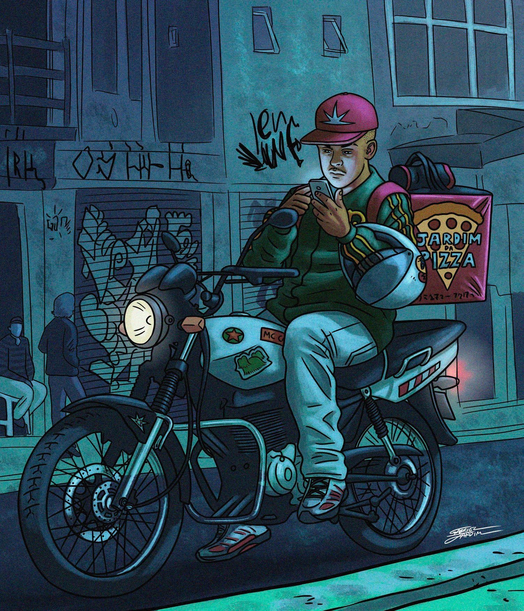
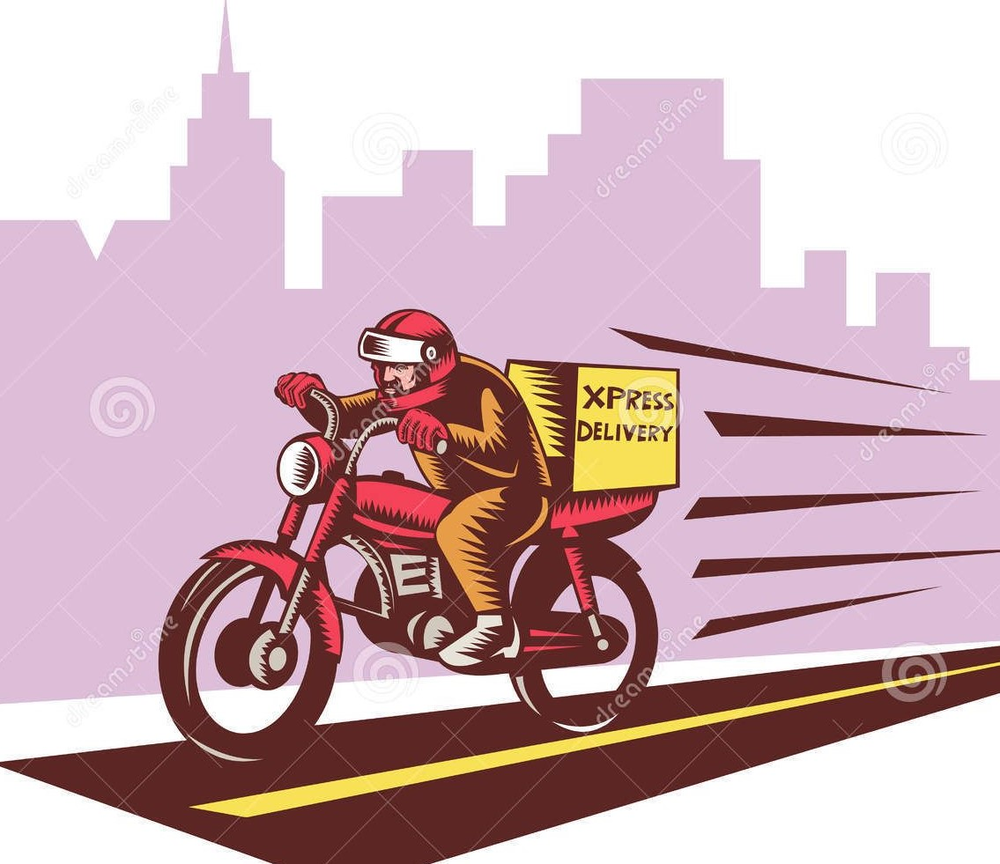
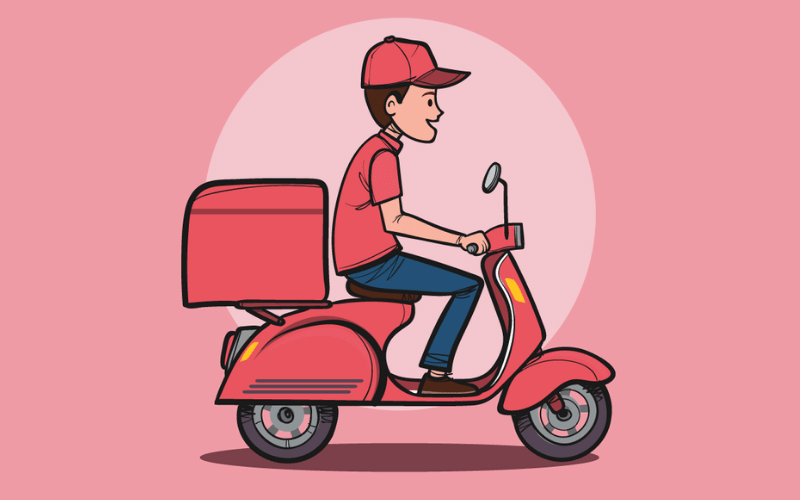

Kaiju, uma palavra japonesa que significa "besta estranha", "animal incomum.
mas traduzida como monstro...
O primeiro e mais conhecido Kaiju apareceu no Japão, um "dinossauro" gigante que destruiu metade de Tokyo,
vocês devem conhecê-lo como Godzilla. Sua aparição fez com que outros kaijus aparecessem em todo mundo, felizmente não
tão grandes
quanto o "Zilla" - carinhosamente apelidado - mas o Brasil não escapou dessa.
Os países se uniram para derrotar essas bestas, mas por um acaso do destino, o Brasil ainda não se livrou totalmente de todos eles. Como nós, brasileiros, estamos acostumados a matar um leão por dia a anos, um kaiju ou outro não vai fazer tanta diferença.
Rio de Janeiro, cidade maravilhosa, um lugar que não é para amadores, e devido a eminência de kaijus, as entregas e deliveries aumentaram exponencialmente em todos os ramos. Como dizia
meu avô "O show não pode parar", e os motoboys tomaram essa frase como ninguém. Precisamos que você ajude a decidir o caminho que nossos MotoHeroes - porque nem todo
herói usa capa- fará para fazer suas entregas de forma segura.
Escolha seu MotoHero e boa sorte !!!
Robson - "Um bom malandro, conquistador, tem naipe de artista pique de jogador", 20 anos, adora uma resenha no Arco do Telles depois do expediente.
Paulinho - 25 anos, um pouco tímido, o famoso roqueiro que não perde um show do Exaltasamba e frequentava a Furacão 2000 e Castelo das Pedras.
Jamil - 18 anos, corajoso beirando a burrice, mas o coração é de um Digiescolhido.